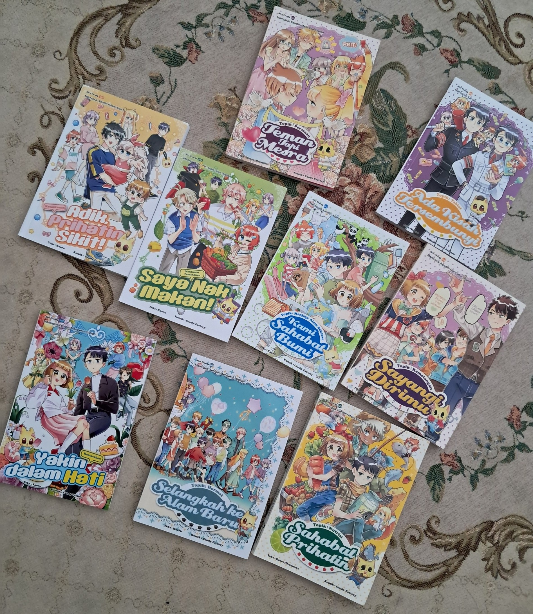

Interest
I have a lot of interest in my life that I love to be involved with. That is including food, pink color, cat, watching vlog and many more, but I think those are a very basic interest that almost every person have in their life. So, I'm only going to emphasized on my two interest that I enjoy the most.
Make a Collection

Some of my CandyJEM comic collection
First and foremost, I really enjoy purchasing an item that I like and make a collection. To exemplify, I have a collection of Stabilo Highlighter and Candy JEM comic book. At first, I just purchase highlighter to use it to study for upcoming SPM, however as time goes on I realized that I keep on buying a new colour almost every week. That's the starting point of my Stabilo highlighter collection.
Meanwhile, for Candy JEM comic book, I started to fall inlove with the book when I was 10 years old. Back then, there is my friends named Tasnim which love Candy JEM comic book. One day, she introduce me to the book. Besides that, she also give me 2 Candy JEM comic just to make me attract to the book. And guess what, it works...Starting from the moment I read the comic, I know that I'm going to buy more candy JEM comic in future. Last year, there was a madani RM100 book voucher given to the IPTA students. I even used the whole voucher to buy 7 Candy JEM comic, that show how much that I love that comic. My favourite character was Aaron and Sham.
Study about Skincare
I like to make a research and learn about skincare. That is including the ingredients, type of sunscreen,moisturizer, cleanser and so on. I believe by having a knowledge about skincare, it will give an effect to make a decision before purchasing the skincare products. By using the correct ingredient, brands and step of skincare, it promotes healthy skin, strenghten skin barrier, reduce skin redness and sensitivity.
Picky and SkinCarisma is an app that I usually used to study about the good and bad ingredient of skincare for different type of skin. TikTok videos like Dr. Wani and Luqfa are also used to know about skin in details.
If you guys wondering how does the my go to skincare website, you guys can click on the website name below:
Best viewed in Chrome, 1920x1080 resolution. Last updated: May 2026.